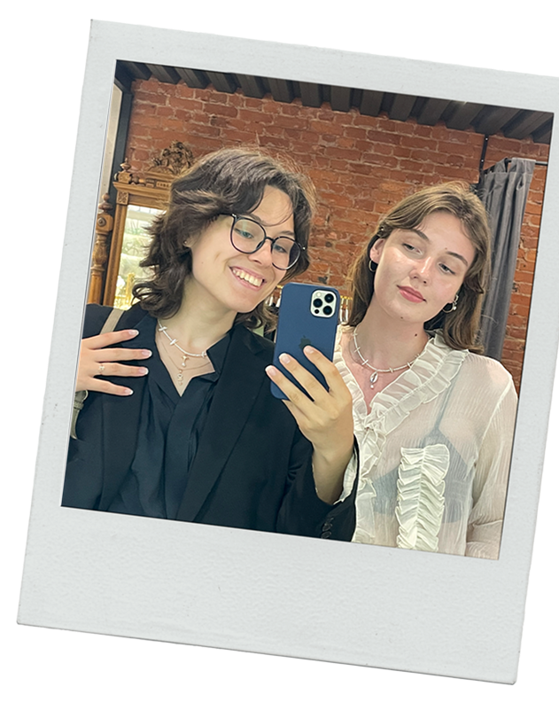

Когда мы встретились в ко-опе геншина
в декабре 2021, я даже не могла представить, что этот очень общительный Кейя-мейн станет мне одним из самых дорогих людей, любовь
к которому я бережно пронесу через стабильные 1800 км и 1317 дней(да, я creep и посчитала….)
Одно время я очень переживала, что вместе
с геншином я могу остаться для тебя
в прошлом – и как же я рада, что этого
не произошло
Моя светлая голубая мечта – это пожитьв одном городе или хотя бы стране. Обожаю нашу традицию с письмами и подарками,
у меня такого еще ни с кем не было...
Хотелось бы и самой чаще тебе что-то присылать!
Ты не представляешь, как я горжусь тем, что ты моя подруга! И мне иногда сложно поверить, как может поменяться жизнь за такой маленький срок – мы уже обе получили вышку, пытаемся в карьеру, строим серьезные отношения...
Пусть мы не всегда играем главные роли в историях друг друга, мне нравится думать, что мы как листики, упавшие в течение бурной реки. Даже дрейфуя в разных ее частях, я знаю, что мы встречаемся снова раз за разом
Мое сердце всегда с тобой, в печали и в радости, ты навсегда моя лучшая подружка

Пусть мы не всегда играем главные роли в историях друг друга, мне нравится думать, что мы как листики, упавшие в течение бурной реки. Даже дрейфуя в разных ее частях, я знаю, что мы встречаемся снова раз за разом
Мое сердце всегда с тобой, в печали и в радости, ты навсегда моя лучшая подружка
Короче, Ритуля, люблю я тебя неимоверно и скучаю по тебе жестко!!! Надеюсь, этот день тебя окутал радостью, да и все остальные дни тоже
Жду с нетерпением, когда мы откроем для себя новую точку на карте, но прежде всего жду, когда смогу тебя крепко обнять <3
Жду с нетерпением, когда мы откроем для себя новую точку на карте, но прежде всего жду, когда смогу тебя крепко обнять <3


В этом году
я желаю тебе
(1) добраться до Токио!
(2) побольше таких коробочек (с наполнением, конечно...)
(3) чтобы все твои карьерные амбиции и идеи воплотились в жизнь – верю, что тебе есть,
что рассказать ;)
(4) побольше возможностей творить и делиться своим видением с другими (и вдохновения на это!)
(5) любви – от близких людей, от мира вокруг и к самой себе в первую очередь <3
(6) оставаться такой же невероятно умной, разносторонней, интересной и не бояться говорить “да” своим желаниям